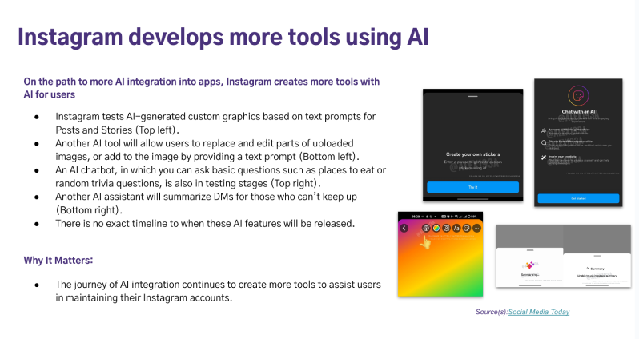
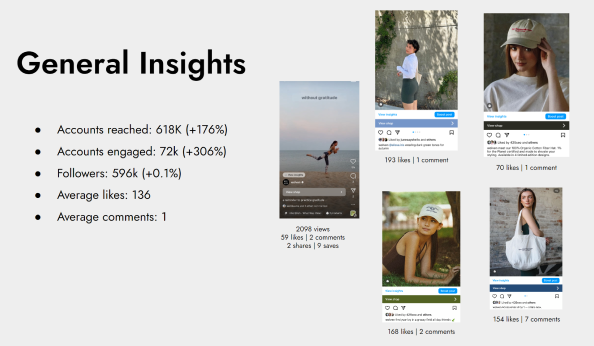

Strategy
Qualitative strategist: social listening, comparative/competitive analysis, etc.
@ NYU
○ Competitive analysis on graduate schools' email marketing to create the ideal email marketing campaign for NYU Wagner
○ Email audit for NYU undergraduate students across all NYU schools to analyze the overproduction of emails at NYU
@ imre
Created branded decks on:
○ Monthly social media platform updates for clients to provide strategy insights
○ Social listening using TalkWalker and organic search to see what clients' audiences are saying
○ Competitor audits - researching on clients' competitors' multi-channel marketing to share with clients
@ Wolven
○ Created decks summarizing Instagram performance for quick overview for social media strategy team
○ Analyzed Instagram performance to offer content ideas by comparing worst and best performing content
○ Used A/B testing in Klaviyo to optimize email campaign performance